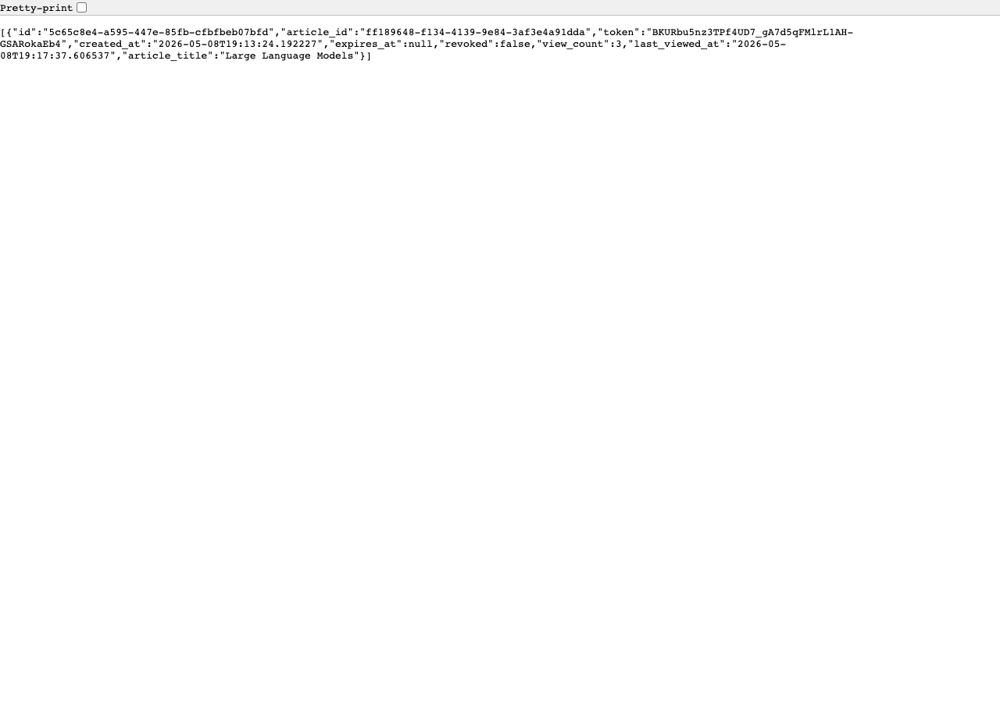
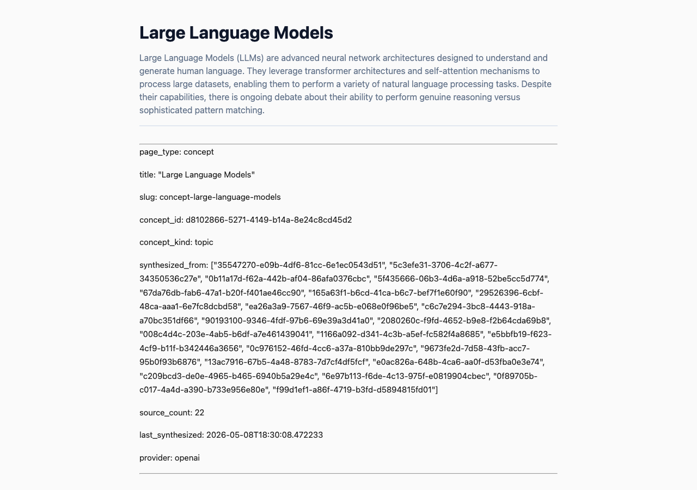
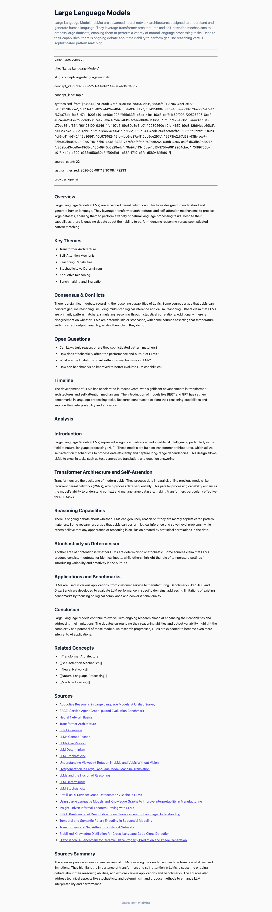
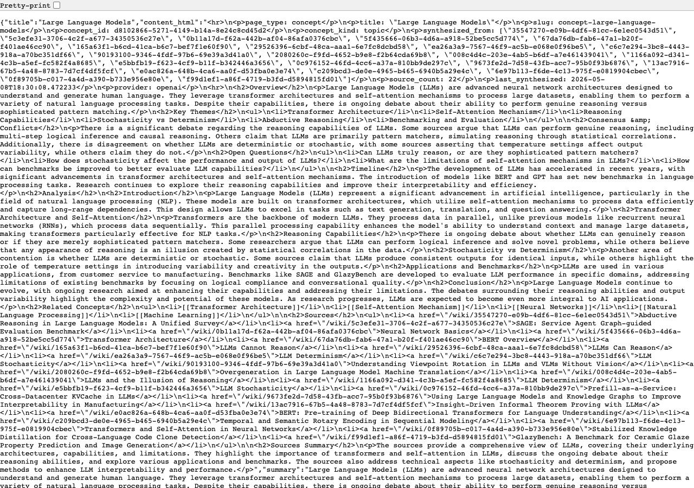
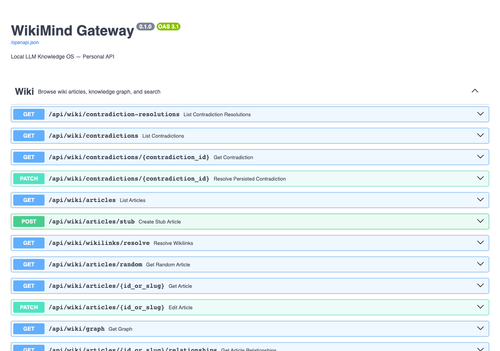

Per-Article Public Share + Portable Wiki Export
This PR implements two key features for WikiMind:
| Method | Path | Description |
|---|---|---|
| POST | /api/wiki/share-links | Create a share link |
| GET | /api/wiki/share-links | List share links |
| DELETE | /api/wiki/share-links/{id} | Revoke a share link |
| GET | /public/articles/{token} | Public HTML render (no auth) |
| GET | /public/articles/{token}/json | Public JSON (no auth) |
| POST | /api/wiki/export/wiki | Export full wiki as ZIP |
The share links API returns a list of share links with tokens, view counts, and article titles.

A shared article rendered as a minimal, styled HTML page accessible without authentication. Shows title, summary, and article content.

Full-page view of the shared article including all content sections.

The JSON endpoint returns structured article data including HTML content, sources, and metadata for API consumers.

The new endpoints are fully documented in the OpenAPI specification and visible in Swagger UI.

Added to the article reader header. Shows a dropdown with share link management (create, copy, revoke).
Files: apps/web/src/components/wiki/ShareButton.tsx
Settings section for exporting the full wiki. Format selector (Obsidian / Markdown+JSON) with download button.
Files: apps/web/src/components/settings/WikiExportPanel.tsx
Settings section listing all active share links with revoke buttons and view counts.
Files: apps/web/src/components/settings/ShareLinksPanel.tsx
| File | Change |
|---|---|
src/wikimind/models.py | Added ShareLink table, WikiExportFormat enum, request/response models |
src/wikimind/services/sharing.py | New: SharingService for share link CRUD and public article rendering |
src/wikimind/services/wiki_export.py | New: WikiExportService for Obsidian and Markdown+JSON ZIP export |
src/wikimind/api/routes/sharing.py | New: Share link CRUD routes + public article endpoint |
src/wikimind/api/routes/export.py | Added wiki export endpoint |
src/wikimind/main.py | Registered sharing router and public routes |
src/wikimind/middleware/auth.py | Added /public/ to auth exemptions |
tests/unit/test_sharing.py | New: 20 tests covering sharing and export |